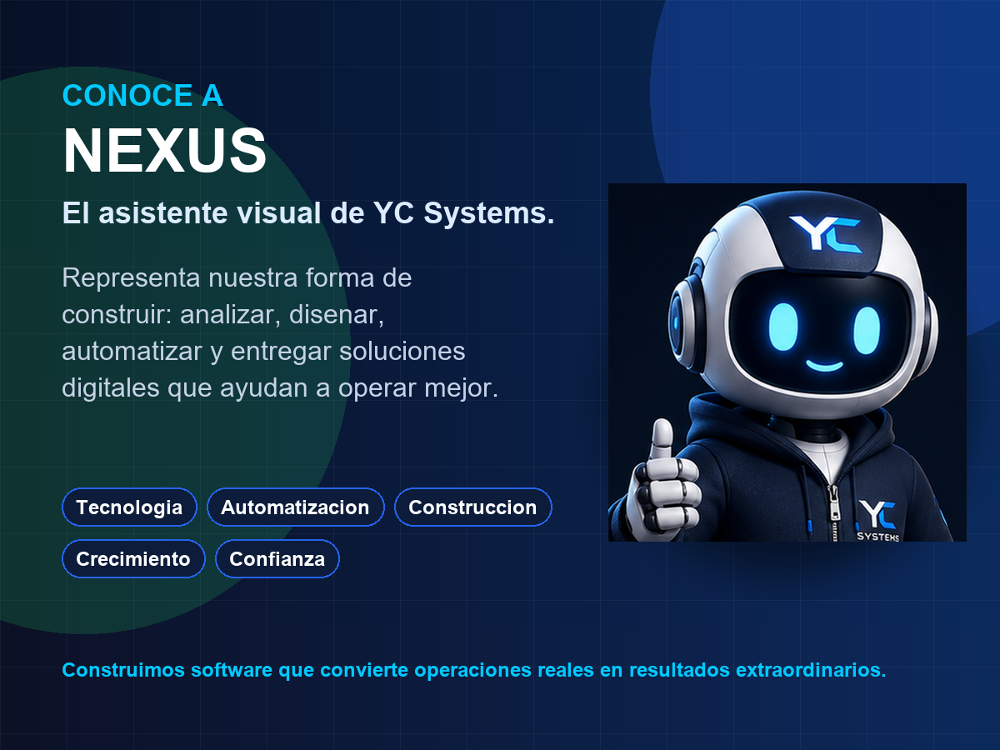

Nuestra mision
Convertir procesos complejos en productos digitales claros, utiles y escalables.
YC Systems construye software que ayuda a empresas a vender mejor, operar con mas control y transformar procesos reales en plataformas mantenibles.
Technology company
YC Systems desarrolla productos SaaS, plataformas operativas y soluciones digitales para empresas que necesitan vender mejor, operar con mas control y escalar con tecnologia.

Who we are
La empresa combina productos propios, casos de cliente y experiencia tecnica para crear soluciones que no se quedan en una pantalla bonita: deben ordenar operaciones, generar confianza comercial y abrir oportunidades de crecimiento.
El enfoque es construir activos tecnologicos que puedan mantenerse, mejorar, venderse y evolucionar con el tiempo: desde una tienda online hasta un SaaS vertical por industria.
Founder & CEO
Yeison Castillo
Product strategy, software development, digital systems and continuous improvement for real business operations.
Instagram oficial Facebook oficial GitHub publicoNuestra mision
YC Systems construye software que ayuda a empresas a vender mejor, operar con mas control y transformar procesos reales en plataformas mantenibles.
Nuestra vision
La meta es crear productos propios, verticales por industria y client projects que puedan crecer en Dominican Republic, United States y Canada.
Nuestra identidad
Nexus representa nuestra forma de construir: analizar, disenar, automatizar y entregar soluciones digitales que ayudan a las empresas a operar mejor, crecer y escalar.
Construimos software que convierte operaciones reales en resultados extraordinarios. - Nexus

Nuestros valores
La empresa se construye con una idea sencilla: el software debe ser claro, ejecutable y generar impacto real.
Construimos y entregamos.
Tecnologia aplicada a problemas reales.
Menos complejidad. Mas claridad.
Actuamos como duenos.
El software debe generar impacto.
Senales de confianza
YC Systems ya muestra productos propios, client projects, repositorios publicos y privados, documentacion tecnica y un proceso claro para convertir nuevas ideas en activos digitales.